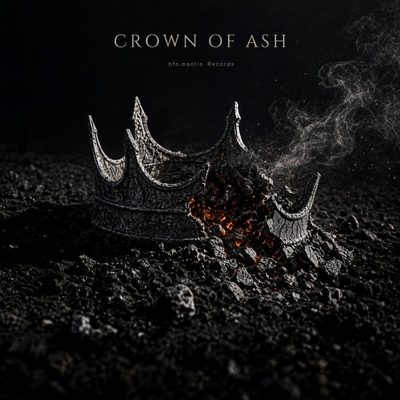

Genre
Folk
3 releases · 20 tracks2 songs · 18 instrumentals
Songs
2 releases · 2 tracks
Singles
2 singles

Crown of Ash
Oct 9, 2026 · Folk
One Man - 站着
Aug 21, 2026 · Folk
Instrumentals
1 release · 18 tracks
Albums
1 album

Savage Serenade
18 tracks · Aug 21, 2026 · Folk